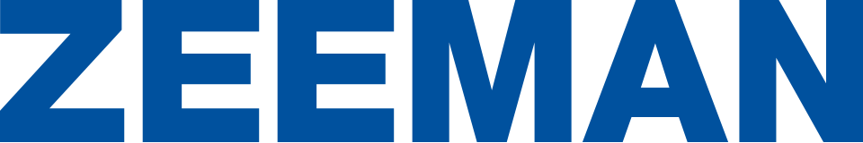

홈 > 브랜드 매거진 > Zeeman
제만 Zeeman
제만(Zeeman)은 네덜란드의 할인 의류·섬유 소매 체인이다.
산업 분야 리테일·커머스 · 공개 등급 자료 기반 · 브랜드 평가 4.1 ★

한눈에 보는 브랜드
제이만(Zeeman)은 네덜란드에 본사를 둔 초저가 의류·생활용품 디스카운트 소매 체인이다. 얀 제이만이 1967년 3월 알펀안덴레인에 첫 매장을 열었으며, 좋은 옷과 직물도 비쌀 필요가 없다는 신념 아래 직물 분야에 셀프서비스를 도입한 것이 시작이었다.
두 가지 전환점이 회사를 키웠다. 첫째, 1974년부터 경쟁사들을 잇따라 인수하며 매장망을 빠르게 확대했다.
둘째, 2020년 이후 50% 이상 재활용 소재를 표시하는 ECO 라벨을 도입해 지속가능성을 핵심 축으로 전환했다. 현재 네덜란드, 벨기에, 룩셈부르크, 독일, 프랑스, 오스트리아, 스페인, 포르투갈 등 8개국에 약 1,300여 개 매장을 운영하며, 직물 슈퍼마켓이라는 독자 형식을 유지하고 있다.
브랜드 관점
제이만의 핵심 경쟁력은 화려한 마케팅이나 패션성이 아니라 양말, 속옷, 티셔츠 같은 기본 베이직을 일관되게 가장 낮은 가격으로 공급하는 노프릴(no-frills) 구조에 있다. 피팅룸 없는 단순한 매장, 저렴한 입지, 대량 매입, 제품의 약 90%를 자체 설계하는 수직 구조가 원가를 끌어내린다.
동시에 제이만은 디스카운터로서 이례적으로 지속가능성을 정면에 내세운다. BCI·유기농·재활용 면, 재활용 폴리에스터, Ecovero 비스코스 등을 확대하고 폐의류와 재사용 가방을 새 제품에 투입하는 순환 직물을 대중화하려 한다.
전략의 또 다른 축은 안티마케팅이다. 명품 스니커즈·웨딩드레스가 왜 비싼지 되묻는 캠페인, 무브랜드 향수 같은 한정판을 비정형 시점에 출시해 화제를 만든다.
한국 독자에게 제이만은 다이소·노브랜드형 초저가 모델에 지속가능 서사를 결합한 유럽식 사례로 읽힌다. 가격 경쟁만으로는 차별화가 어려운 국내 저가 시장에서, 가치 소비와 가격 민감 소비를 동시에 끌어안는 포지셔닝의 참고점이 된다.
시작과 성장
1960년대 후반 네덜란드는 전후 소비 확대와 셀프서비스 유통의 태동기였다. 얀 제이만은 좋은 옷과 직물도 비쌀 필요가 없다는 확신으로 1967년 3월 알펀안덴레인에 첫 매장을 열었다.
의류용 슈퍼마켓이라는 발상은 즉시 성공했고, 곧 즈바넌뷔르흐에 2호점, 1969년 뷔르던에 3호점이 이어졌다. 첫 7년간 암스테르담 2곳을 포함해 직영 17개 매장을 열었다.
첫 번째 전환점은 1974년부터 시작된 경쟁사 인수로, 이를 통해 매장 수가 가파르게 늘며 전국 체인으로 도약했다. 두 번째 전환점은 경영 승계다.
창업자는 1999년 일상 경영에서 물러났고 전 케이크스홉 임원 파울 스하우베나르가 지휘봉을 이어받았다. 이후 회사는 베네룩스를 발판으로 독일, 프랑스로 넓혔고 스페인과 포르투갈로 영역을 확장했다.
포르투갈은 마토지뉴스 1호점 이후 2024년 오바르에 8호점을 열며 중부로 무게중심을 옮겼고, 2023년 6월부터 온라인 매장도 가동 중이다.
브랜드 아이덴티티
제이만의 핵심 가치는 단순함(eenvoud)과 검약(zuinig)이다. 좋은 품질의 옷과 침구가 비쌀 필요가 없다는 창업 철학을 변함없이 브랜드 약속으로 삼는다.
비주얼 아이덴티티는 노란색과 파란색을 기본색으로 쓰며 선원의 머리를 형상화한 로고를 사용한다. 매장 인테리어와 포장재 모두 단순함을 발산하도록 의도되어, 군더더기 없는 외관 자체가 저가 약속의 시각적 증거가 된다.
타깃은 두 갈래다. 저렴한 옷을 사야 하는 사람과, 의식적으로 그 가치를 선택하는 사람이다.
과거 30대 이상 어머니 중심이던 고객층은 15세 이상으로 넓어졌고, 지속가능 행보가 새로운 세그먼트를 끌어들이고 있다. 브랜드 보이스는 특유의 안티마케팅으로, 비싼 명품 가격에 의문을 던지는 위트 있는 캠페인과 한정판을 무기로 진정성과 저가 약속을 동시에 전한다.
제품과 서비스
취급 품목은 양말, 속옷, 티셔츠 같은 기본 의류와 직물, 침구 등 기본 생활용품이 중심이며 가정용 직물도 다룬다. 제품의 약 90%를 자체 설계해 원가를 통제한다.
채널은 8개국에 걸친 약 1,300여 개 오프라인 매장이 핵심이며, 동네 매장 모델을 지향한다. 여기에 포르투갈에서 2023년 6월 개시된 온라인 매장처럼 시장별 전자상거래를 더해 전국 단위 도달을 보강하고 있다.
현재 상태
본사는 네덜란드 남홀란트주 알펀안덴레인에 있으며, 물류센터도 같은 도시에 위치한다. 지배구조는 비상장 가족 소유 형태로, 창업자 가문이 지분을 보유하고 그 위의 재단을 통해 창업자의 세 아들이 감독 역할을 맡는 구조다.
일상 경영은 전문경영인이 담당하며, 2018년 1월부터 회사를 이끈 최고경영자 에릭얀 마레스가 2026년 6월 퇴임하고 후임이 승계할 예정이다. 운영 국가는 네덜란드, 벨기에, 룩셈부르크, 독일, 프랑스, 오스트리아, 스페인, 포르투갈 8개국이며 베네룩스가 매출의 약 63%를 차지하는 최대 시장이다.
2022 회계연도 매출은 약 7억 7천5백만 유로로 보고되었고, 매장망은 스페인·포르투갈 중심으로 계속 확장 중이다. 그 밖의 세부 수치는 미공개.
BI/CI 변천사
자주 묻는 질문
제만는 어느 나라 브랜드인가요?
제만는 네덜란드의 리테일·커머스 브랜드입니다.
제만의 브랜드 아이덴티티는 무엇인가요?
제이만의 핵심 가치는 단순함(eenvoud)과 검약(zuinig)이다.
제만의 대표 제품은 무엇인가요?
취급 품목은 양말, 속옷, 티셔츠 같은 기본 의류와 직물, 침구 등 기본 생활용품이 중심이며 가정용 직물도 다룬다.
제만의 본사는 어디에 있나요?
본사는 네덜란드 남홀란트주 알펀안덴레인에 있으며, 물류센터도 같은 도시에 위치한다.
제만의 공식 웹사이트는 어디인가요?
제만의 공식 웹사이트는 https://www.zeeman.com/ 입니다.
함께 읽을 브랜드
 리테일·커머스 · 디렉토리다이소
리테일·커머스 · 디렉토리다이소다이소는 대한민국의 생활용품 균일가 리테일 브랜드입니다. 문구, 주방, 수납, 청소, 뷰티, 식품 등 일상용품을 폭넓게 판매합니다.
NO
노브랜드
리테일·커머스 · 자료 기반노브랜드노브랜드(No Brand)는 이마트가 운영하는 가성비 중심의 자체 브랜드(PB)다.
 리테일·커머스 · 매거진 완성유니클로
리테일·커머스 · 매거진 완성유니클로유니클로는 패션을 유행의 장식이 아니라 생활을 구성하는 공산품처럼 다룬다. 브랜드의 힘은 화려한 스타일보다 베이직, 품질, 가격, 운영 시스템을 일관되게 정렬하는 데...
Lo
Lolo
리테일·커머스 · 편집 검수LoloLolo는 2024년에 기록된 Shoppy Shop Brands 계열의 브랜드 아이덴티티 사례입니다. Odds Studio가 아이덴티티 작업의 디자이너로 기록되어 있...
 리테일·커머스 · 자료 기반SuperBioMarkt
리테일·커머스 · 자료 기반SuperBioMarkt주퍼비오마르크트(SuperBioMarkt)는 1973년 독일 뮌스터에서 시작한 유기농 식품 슈퍼마켓 체인이다. 독일에서 가장 오래된 유기농 소매업체 중 하나로 꼽힌다...
Fl
Flaum
리테일·커머스 · 편집 검수FlaumFlaum는 2025년에 기록된 Shoppy Shop Brands 계열의 브랜드 아이덴티티 사례입니다. M/OTG가 아이덴티티 작업의 디자이너로 기록되어 있습니다....
Ye
Yellowbird
리테일·커머스 · 편집 검수YellowbirdYellowbird는 2024년에 기록된 Shoppy Shop Brands 계열의 브랜드 아이덴티티 사례입니다. Gander가 아이덴티티 작업의 디자이너로 기록되어...
29
29CM
리테일·커머스 · 자료 기반29CM29CM는 감도 높은 취향을 내세운 한국의 온라인 셀렉트숍이다. 최저가 경쟁 대신 브랜드 스토리와 큐레이션을 앞세워 2030 세대의 라이프스타일 소비를 겨냥한 콘텐츠...